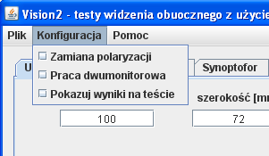
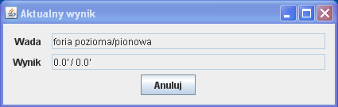

Menu "Konfiguracja"
Wygląd menu "Konfiguracja" przedstawiono na rys.1. Zawiera ono następujące opcje:
- Zamiana polaryzacji: Zaznaczenie tej opcji spowoduje zamianę ze sobą wszystkich elementów testu wyświetlanych dla lewego i prawego oka. Równoważne z naciśnięciem klawisza "P" w czasie wyświetlania dowolnego testu.
- Praca dwumonitorowa: Zaznaczenie tej opcji spowoduje włączenie trybu pracy dwumonitorowej. W trybie pracy jednomonitorowej główne okienko znika podczas wyświetlania testu. W trybie pracy dwumonitorowej główne okienko nie znika, a dodatkowo w trakcie testów pojawia się nad nim dodatkowe okienko (pokazane na rys. 2) prezentujące aktualny wynik pomiaru. Po włączeniu trybu pracy dwumonitorowej główne okienko programu należy przeciągnąć na monitor dodatkowy.
- Pokazuj wyniki na teście: Zaznaczenie tej opcji spowoduje wyświetlanie w górnym lewym rogu testu aktualnego wyniku. Równoważne z naciśnięciem spacji w czasie wyświetlania dowolnego testu.

Rys.1 Menu "Konfiguracja"

Rys.2 Prezentacja aktualnego wyniku w trybie pracy dwumonitorowej